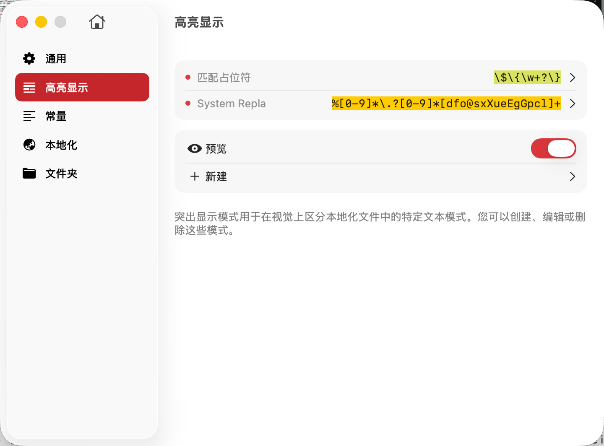

高亮显示功能用于在本地化文件的内容区中以视觉化方式标识特定的文本模式，帮助开发者快速识别和区分不同类型的内容。通过自定义高亮规则，您可以让重要的格式化信息、占位符、特殊标记等内容更加醒目，提升开发效率和内容管理的准确性。
高亮显示模式允许您：
1. 占位符高亮
在本地化字符串中，占位符用于表示动态内容的插入位置。高亮占位符可以帮助您：
常见占位符格式：
// iOS/macOS 格式化字符串
"Welcome, %@!" = "欢迎，%@！";
"You have %d messages" = "您有 %d 条消息";
"Progress: %.2f%%" = "进度：%.2f%%";
// 自定义占位符
"Hello, {username}!" = "你好，{username}！";
"Count: {{count}}" = "数量：{{count}}";2. 格式标记高亮
高亮 HTML、Markdown 或自定义的格式标记：
// HTML 标签
"<b>Bold text</b>" = "<b>粗体文本</b>";
"Click <a href='...'>here</a>" = "点击<a href='...'>这里</a>";
// Markdown 语法
"**Important**: Read this" = "**重要**：请阅读";
"Visit [our site](url)" = "访问[我们的网站](url)";3. 特殊字符高亮
标识需要特别注意的特殊字符：
// 转义字符
"Line 1\nLine 2" = "第一行\n第二行";
"Tab\tseparated" = "制表符\t分隔";
// 特殊符号
"Price: $10.99" = "价格：$10.99";
"Ratio: 16:9" = "比例：16:9";4. 变量和常量标记
在某些框架中，使用特定语法表示变量：
// Angular i18n
"Hello {{name}}" = "你好 {{name}}";
// Vue i18n
"Total: {count} items" = "总计：{count} 项";
// ICU MessageFormat
"{count, plural, one {# item} other {# items}}"
创建或编辑高亮规则时，您需要配置以下选项：
1. 规则名称
2. 匹配正则表达式
3. 显示位置
4. 高亮颜色
5. 启用状态
匹配常见占位符格式：
iOS/macOS 格式化字符串：
%[@dfiuxXocsfeEgGpn]|\%\d+\$[@dfiuxXocsfeEgGpn]匹配：%@、%d、%1$@、%2$d
等
自定义花括号占位符：
\{[a-zA-Z_][a-zA-Z0-9_]*\}匹配：{name}、{count}、{user_id}
等
双花括号占位符：
\{\{[^}]+\}\}匹配：{{name}}、{{count}} 等
匹配 HTML 标签：
所有 HTML 标签：
<[^>]+>匹配：<b>、<a href="...">、</div>
等
特定标签（如粗体、斜体）：
<\/?[bi]>匹配：<b>、</b>、<i>、</i>
匹配 Markdown 语法：
粗体和斜体：
\*\*[^*]+\*\*|\*[^*]+\*|__[^_]+__|_[^_]+_匹配：**bold**、*italic*、__bold__、_italic_
链接语法：
\[([^\]]+)\]\([^\)]+\)匹配：[text](url)
匹配转义字符：
\\[nrtfvb0'"\\]匹配：\n、\t、\r、\\
等
1. 合理使用颜色
2. 优先高亮重要内容
3. 正则表达式优化
4. 定期审查规则
5. 团队协作
6. 性能考虑
以下是一个完整的高亮配置示例：
| 规则名称 | 正则表达式 | 显示位置 | 颜色 | 用途 |
|---|---|---|---|---|
| iOS占位符 | %[@dfiuxXocsfeEgGpn] |
前景色 | #FF6B6B | 标识iOS格式化占位符 |
| 自定义占位符 | \{[a-zA-Z_][a-zA-Z0-9_]*\} |
背景色 | #FFD93D | 标识自定义占位符 |
| HTML标签 | <[^>]+> |
前景色 | #6BCF7F | 标识HTML格式标记 |
| 转义字符 | \\[nrtfvb0'"\\] |
下划线 | #A78BFA | 标识转义序列 |
| 废弃标记 | \[DEPRECATED\] |
删除线 | #9CA3AF | 标识已废弃的内容 |